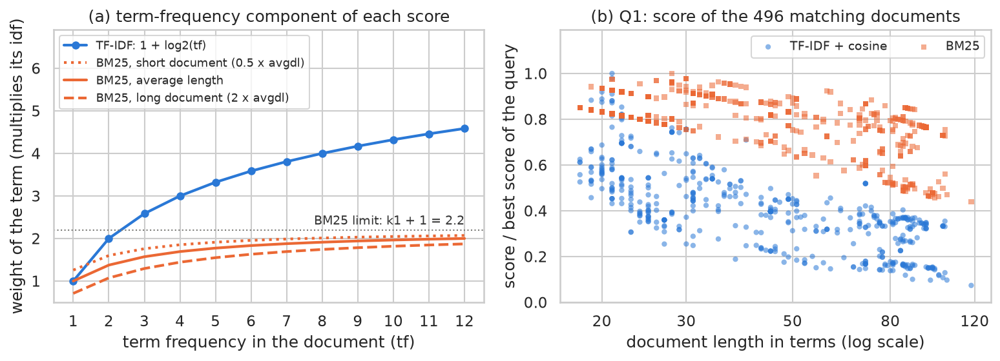
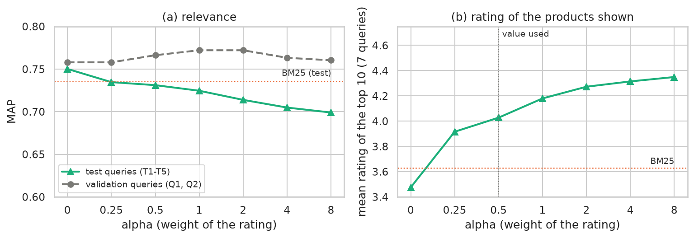
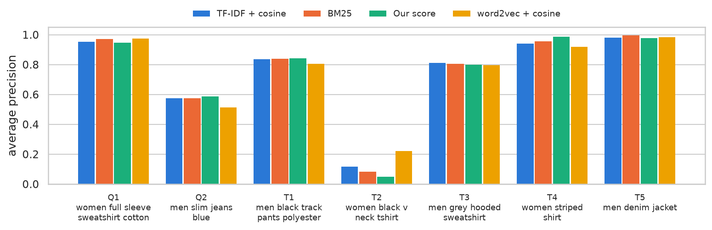

| Students | u233738, u233436, u232597 |
| GitHub | https://github.com/victorbrull/irwa-search-engine |
| Tag | IRWA-2026-part-3 |
In this part the documents returned by a conjunctive query are sorted with four scores: TF-IDF + cosine, BM25, a score of our own that
uses the numeric fields of the products, and word2vec + cosine. We compare the rankings, we give the top-20 lists of word2vec for our five
queries of Part 2, and we discuss which representations could be better than an average of word vectors. The code of Parts 1 and 2 is used
without any change: the pre-processing (preprocess_text), the inverted index and the conjunctive retrieval, the TF-IDF and BM25
rankers, the evaluation metrics and our relevance judgments. The new code is in project_progress/part_3: ranking.py
(our score, word2vec, doc2vec), search.py (command line), test_part3.py (tests) and the notebook
ranking_filtering.ipynb, which writes every number of this report in results/.
Evaluation data. We evaluate with the same seven queries, judgments and protocol as in Part 2: the two validation queries of
validation_labels.csv (Q1, Q2; 20 judged documents each, the ranking is reduced to the judged documents) and our five test queries
(T1-T5; every document of the collection has a label, the whole ranking is evaluated). "Val." and "Test" refer to these two sets.
| Id | Query | Terms after pre-processing | AND matches | Relevant (R) |
|---|---|---|---|---|
| Q1 | women full sleeve sweatshirt cotton | women full sleev sweatshirt cotton | 496 | 13 |
| Q2 | men slim jeans blue | men slim jean blue | 224 | 10 |
| T1 | men black track pants polyester | men black track pant polyest | 79 | 79 |
| T2 | women black v neck tshirt | women black neck tshirt | 1,584 | 43 |
| T3 | men grey hooded sweatshirt | men grey hood sweatshirt | 40 | 48 |
| T4 | women striped shirt | women stripe shirt | 114 | 74 |
| T5 | men denim jacket | men denim jacket | 73 | 38 |
Seven queries are few. A difference of one or two hundredths in MAP between two rankings is not evidence that one is better, so we use the metrics to find the large effects and we explain each of them by looking at the documents.
Note on the TF-IDF figures. The Part 2 report gives MAP 0.760 (val.) and 0.723 (test) for TF-IDF. Those values were computed with
base-10 logarithms in the weights; part_2/indexing.py now uses base 2 (the formula written in that report), which gives
0.764 and 0.737. The base changes the weight of a repeated term (1 + log tf is 2.0 for tf = 2 with base 2 and 1.3 with base 10), so the
order of a few documents changes. The BM25 figures are identical to the ones of Part 2.
Every search has three steps: (1) the query is pre-processed with the function of Part 1, like the documents; (2) the inverted index of
Part 2 returns the documents that contain all the query terms (the postings lists are intersected from the rarest term to the most
frequent one); (3) the matching documents are sorted by the selected score. Only step 3 changes between methods: we checked that the four
methods return exactly the same documents for the seven queries. The method is selected by name, from Python
(ranking.build_engines(...)["bm25"].search(query, top_k=20)) or from the command line
(python search.py "men denim jacket" --method tfidf|bm25|custom|word2vec|all); the README lists the options of each method.
In the cosine, ‖d‖ is the norm of the whole document vector, so it depends on every term of the document. In BM25 the document only enters through the frequency of the query terms and through its length |d| (number of terms) relative to the average length (avgdl = 44.7 terms).
| Query | AND matches | Common in top 10 | Common in top 20 | Kendall τ | Mean length top 10, TF-IDF | Mean length top 10, BM25 | Mean length, all matches |
|---|---|---|---|---|---|---|---|
| Q1 | 496 | 2 | 2 | 0.75 | 20.5 | 27.5 | 50.0 |
| Q2 | 224 | 4 | 11 | 0.80 | 22.0 | 31.1 | 50.4 |
| T1 | 79 | 5 | 13 | 0.76 | 13.2 | 24.9 | 34.7 |
| T2 | 1,584 | 3 | 4 | 0.72 | 25.8 | 30.0 | 54.8 |
| T3 | 40 | 7 | 19 | 0.79 | 24.4 | 26.0 | 51.4 |
| T4 | 114 | 0 | 17 | 0.82 | 19.0 | 20.5 | 60.4 |
| T5 | 73 | 10 | 15 | 0.84 | 24.4 | 24.4 | 71.5 |
| Mean | 4.4 | 11.6 | 0.78 | 21.3 | 26.3 | 53.3 |
Agreement between the two rankings of each query. Kendall's τ compares the complete rankings (1 = same order). Length = number of terms of the document.

| Ranking | Val. MAP | Val. NDCG@10 | Test MAP | Test P@10 | Test NDCG@10 | Test MRR |
|---|---|---|---|---|---|---|
| TF-IDF + cosine | 0.764 | 0.859 | 0.737 | 0.860 | 0.885 | 1.000 |
| BM25 | 0.772 | 0.859 | 0.736 | 0.820 | 0.817 | 0.840 |
| Average precision | Q1 | Q2 | T1 | T2 | T3 | T4 | T5 |
|---|---|---|---|---|---|---|---|
| TF-IDF + cosine | 0.954 | 0.575 | 0.836 | 0.115 | 0.810 | 0.940 | 0.981 |
| BM25 | 0.970 | 0.575 | 0.839 | 0.083 | 0.804 | 0.956 | 0.996 |
The MAP of the two rankings is the same within one hundredth on both sets. BM25 has a higher average precision in four queries (Q1, T1, T4, T5), the cosine in two (T2, T3). The differences in P@10, NDCG@10 and MRR come from one query, T2: in the other six, P@10 and NDCG@10 are identical. In T2 (women black v neck tshirt, where the pre-processing removes the letter v) only 43 of the 1,584 matching documents are relevant, and they are shorter than the rest (39.8 terms against 54.8), so the ranking that prefers short documents finds more of them (P@10 0.3 against 0.1; first relevant document at rank 1 against rank 5). It is an effect of the length, not of a better understanding of the query.
| k1 | b | Val. MAP | Test MAP | Test P@10 | AP T2 | AP T4 |
|---|---|---|---|---|---|---|
| 1.2 | 0 | 0.764 | 0.687 | 0.78 | 0.040 | 0.807 |
| 1.2 | 0.5 | 0.769 | 0.731 | 0.82 | 0.060 | 0.961 |
| 1.2 | 0.75 | 0.772 | 0.736 | 0.82 | 0.083 | 0.956 |
| 1.2 | 1 | 0.778 | 0.745 | 0.86 | 0.147 | 0.951 |
| 0.5 | 0.75 | 0.778 | 0.736 | 0.82 | 0.083 | 0.958 |
| 2 | 0.75 | 0.772 | 0.735 | 0.82 | 0.087 | 0.954 |
BM25 parameters (first four rows: k1 = 1.2 and different b; last two rows: b = 0.75 and different k1).
Parameters of BM25. k1 has almost no effect (test MAP 0.736, 0.736 and 0.735 for k1 = 0.5, 1.2 and 2.0), because the term frequencies of this collection are small. b matters: without length normalisation (b = 0) the test MAP falls from 0.736 to 0.687, mainly in T4 (AP 0.956 → 0.807), where long descriptions that only mention a shirt go up; with full normalisation (b = 1) it is 0.745. In this collection the short documents are the plain product listings, so penalising length helps. We keep the standard values (1.2, 0.75): choosing b = 1 with seven queries would be fitting the parameters to the evaluation set.
| TF-IDF + cosine | BM25 |
|---|---|
Pros
|
Pros
|
Cons
|
Cons
|
TF-IDF and BM25 only use the text. Two products with the same text score can be very different offers: one has rating 4.5 and is in stock, the other has rating 2.1 or cannot be bought. Our score keeps the text relevance as the basis and corrects it with three other pieces of information: where the query terms appear, the quality of the offer (numeric fields) and its availability. The numeric fields of a record are the rating, the discount, the two prices and the stock flag; Part 1 parsed them as numbers and did not index them as text.
| Field | Missing | Min | Median | Mean | Max |
|---|---|---|---|---|---|
| average_rating (1-5) | 8.1% | 1 | 3.8 | 3.63 | 5 |
| discount (%) | 2.8% | 0 | 52 | 50.11 | 87 |
| selling_price | 0.0% | 99 | 545 | 705.64 | 7,999 |
| actual_price | 2.8% | 150 | 1199 | 1455.53 | 12,999 |
| out_of_stock (share) | 0.0% | — | — | 0.059 | — |
| Factor | Definition | Why |
|---|---|---|
| BM25(q, d) | BM25 on the merged field, as in section 3 | Basis of the text relevance. We chose BM25 and not the cosine because its score is not divided by the norm of the whole document. |
| title(q, d) | Share of the distinct query terms that appear in the title of the product (0 to 1) | Part 2 showed that many non-relevant results contain a query term only in the description (a T-shirt that "goes well with a denim jacket"). A product whose title has the query words is that product. |
| rating(d) | (average_rating − 1) / 4, between 0 and 1. Missing (8.1% of the products) → mean of the collection (3.63) | Between two products that match equally, the better rated one is the better answer. The mean is a neutral value: an unrated product is not rewarded and not punished. |
| discount(d) | discount / 100, between 0 and 1. Missing (2.8%) → 0: these products have no list price, so there is no discount to reward | A discounted product is a more attractive offer. It is a weaker signal than the rating (see the cons), so it has half the weight. |
| stock(d) | 1 if the product is in stock, γ if it is out of stock (5.9% of the products) | A product that cannot be bought is a worse result. It is moved down, not removed: the user can still see that it exists. |
How the factors combine. The text part decides which products are about the query. The numeric part multiplies it by a factor that is bounded: (1 + α·rating + β·discount) goes from 1 to 1.75, and over the collection the whole offer factor (with the stock) is between 0.55 and 1.71 (median 1.46). So the numeric fields reorder products with a similar text score and cannot bring a poor match to the first positions. We set the weights by the size of the effect that we consider reasonable, not by optimisation: a product with all the query terms in the title doubles its score; five stars against one star is +50% (with no discount); a discount of 80% adds 0.20 to the factor; being out of stock halves the score. In the collection the rating is almost uncorrelated with the discount (−0.05) and with the price (−0.01), so the rating and the discount are not the same signal counted twice.
Price is not used. A cheaper product is not a more relevant one unless the user asks for it, and rewarding a low price would push the cheapest items of every query to the top. Price belongs in a filter or a sort option (Part 4), not in the relevance score.
Our relevance judgments say whether a product is what the query asks for; they do not say that a well rated product is a better answer than the same product with a bad rating. For this reason we report two things: the relevance metrics, which only measure the text part of our score, and the offers that appear in the first positions of the seven queries.
| Positions | Ranking | Mean rating (rated products) | Without rating | Mean discount | Out of stock |
|---|---|---|---|---|---|
| Top 10 of the 7 queries | TF-IDF + cosine | 3.35 | 12.9% | 47.9% | 17.1% |
| Top 10 of the 7 queries | BM25 | 3.63 | 8.6% | 54.2% | 12.9% |
| Top 10 of the 7 queries | Our score | 4.03 | 1.4% | 57.1% | 0.0% |
| Top 10 of the 7 queries | word2vec + cosine | 3.33 | 1.4% | 52.6% | 10.0% |
| All the matching documents | (any order) | 3.67 | 11.5% | 52.3% | 7.5% |
Offers shown in the first ten positions of the seven queries (70 documents per ranking).
With our score the products in the top 10 have a mean rating of 4.03 (BM25: 3.63; TF-IDF: 3.35), a mean discount of 57.1% (BM25: 54.2%), and none of them is out of stock (BM25: 12.9%; TF-IDF: 17.1%, more than the 7.5% of the matching documents). Relevance stays at the level of BM25: test MAP 0.731 against 0.736, validation MAP 0.766 against 0.772, test P@10 0.80 against 0.82 (the values of every query are in the table of section 5.4). The table below shows what each factor does.
| Variant | Val. MAP | Test MAP | Test P@10 | Rating top 10 | Discount top 10 | Out of stock top 10 | AP T2 | AP T4 | AP T5 |
|---|---|---|---|---|---|---|---|---|---|
| BM25 only | 0.772 | 0.736 | 0.82 | 3.63 | 54.2% | 12.9% | 0.083 | 0.956 | 0.996 |
| + title match (λ = 1) | 0.777 | 0.747 | 0.82 | 3.62 | 54.5% | 12.9% | 0.087 | 0.998 | 0.998 |
| + rating (α = 0.5) | 0.766 | 0.733 | 0.80 | 4.17 | 52.5% | 12.9% | 0.039 | 0.992 | 0.992 |
| + discount (β = 0.25) | 0.764 | 0.737 | 0.80 | 4.07 | 57.8% | 12.9% | 0.047 | 0.993 | 0.997 |
| + stock (γ = 0.5) = our score | 0.766 | 0.731 | 0.80 | 4.03 | 57.1% | 0.0% | 0.049 | 0.987 | 0.977 |
| Our score without title match | 0.741 | 0.709 | 0.80 | 4.05 | 57.8% | 0.0% | 0.046 | 0.924 | 0.941 |
| Our score without rating | 0.758 | 0.750 | 0.88 | 3.48 | 62.8% | 0.0% | 0.136 | 0.990 | 0.980 |
| Our score without discount | 0.769 | 0.726 | 0.80 | 4.10 | 53.1% | 0.0% | 0.039 | 0.984 | 0.971 |
Each of the first five rows adds one factor to the previous row; the last three remove one factor from the complete score. Rating, discount and stock: top 10 of the seven queries.

Sensitivity. Figure 2 shows the trade-off for α: from α = 0 to α = 8 the test MAP goes down slowly (0.750 → 0.699) and the mean rating of the top 10 goes up (3.48 → 4.35). With α = 0.5 we get most of the gain in rating (4.03) for a small part of the loss (0.731). For the stock, any γ ≤ 0.75 removes the out-of-stock products from the top 10; with γ = 0 (out-of-stock products always last) the test MAP falls to 0.704.
| Pros | Cons |
|---|---|
|
|
We train word2vec on our own collection (gensim), on the pre-processed terms of the indexed field (all_terms, one document
= one sentence, 1.26M tokens). We do not use pre-trained vectors because the terms of the index are stems (sleev, polyest, tshirt)
and brand names that are not in a pre-trained vocabulary; with our own vectors the query and the documents go through the same pre-processing
and every term that can pass the AND has a vector. Settings: CBOW, 100 dimensions, window 5, min_count = 1, 10 negative samples,
30 epochs. 100 dimensions and 30 passes because the corpus is small; min_count = 1 so that the 5,865 terms of the index have a vector
(the vectors of the rarest terms are noisy, but each of them has little weight in the average of a document). CBOW is about four times faster per epoch
than skip-gram here and it was not worse in our tests (section 6). The training uses one thread, a fixed seed and a hash function that does not change between
sessions, so it is reproducible; the vectors are also stored in models/word2vec_fashion.bin.
The vectors capture which words are used in the same contexts: the nearest terms of polyest are polycotton 0.62, nylon 0.49, cotton 0.47; of sweatshirt, pullov 0.57, sweater 0.45, jacket 0.44, hoodi 0.43; of jean, denim 0.47, chino 0.39, tan 0.37, trouser 0.36.
As the statement asks, a text is represented by one vector, the average of the vectors of all its words (a word that appears twice
counts twice). The document vector uses the terms of all_terms, the query vector the pre-processed query terms, and the score is the
cosine between the two. The document vectors are computed once and stored normalised, so ranking the candidates is one matrix-vector product.
The search is the same conjunctive search as before: only the documents with all the query terms are ranked.
The top-20 lists of the five queries are in Appendix A and in results/word2vec_top20.csv. The table summarises them.
| Query | AND matches | Relevant in top 20 | Cosine, rank 1 | Cosine, rank 20 | Cosine, median of the matches | Top 20 shared with TF-IDF | Top 20 shared with BM25 |
|---|---|---|---|---|---|---|---|
| T1: men black track pants polyester | 79 | 19 | 0.876 | 0.746 | 0.719 | 9 | 15 |
| T2: women black v neck tshirt | 1,584 | 8 | 0.943 | 0.935 | 0.883 | 1 | 6 |
| T3: men grey hooded sweatshirt | 40 | 19 | 0.840 | 0.755 | 0.750 | 15 | 16 |
| T4: women striped shirt | 114 | 20 | 0.878 | 0.843 | 0.780 | 10 | 13 |
| T5: men denim jacket | 73 | 20 | 0.836 | 0.754 | 0.673 | 13 | 17 |
In T1, T3, T4 and T5 the top 20 is almost entirely relevant (19, 19, 20, 20 of 20), as with the lexical scores. In T2 there are 8 relevant documents in the top 20 (TF-IDF: 5; BM25: 2).
| Ranking | Val. MAP | Val. NDCG@10 | Test MAP | Test P@10 | Test NDCG@10 | Test MRR |
|---|---|---|---|---|---|---|
| TF-IDF + cosine | 0.764 | 0.859 | 0.737 | 0.860 | 0.885 | 1.000 |
| BM25 | 0.772 | 0.859 | 0.736 | 0.820 | 0.817 | 0.840 |
| Our score | 0.766 | 0.829 | 0.731 | 0.800 | 0.800 | 0.817 |
| word2vec + cosine | 0.745 | 0.843 | 0.745 | 0.940 | 0.929 | 0.900 |
| Average precision | Q1 | Q2 | T1 | T2 | T3 | T4 | T5 |
|---|---|---|---|---|---|---|---|
| TF-IDF + cosine | 0.954 | 0.575 | 0.836 | 0.115 | 0.810 | 0.940 | 0.981 |
| BM25 | 0.970 | 0.575 | 0.839 | 0.083 | 0.804 | 0.956 | 0.996 |
| Our score | 0.947 | 0.586 | 0.843 | 0.049 | 0.800 | 0.987 | 0.977 |
| word2vec + cosine | 0.976 | 0.513 | 0.807 | 0.220 | 0.795 | 0.919 | 0.984 |
| Pair of terms | men / women | grey / black | blue / black | round / neck | polyest / polycotton | jean / denim | hood / hoodi | grey / gray | pant / trouser | shirt / tshirt |
|---|---|---|---|---|---|---|---|---|---|---|
| Cosine | 0.99 | 0.89 | 0.71 | 0.74 | 0.62 | 0.47 | 0.30 | 0.28 | 0.25 | 0.34 |
The same ranking without the AND. In this pipeline word2vec only re-orders documents that already contain all the query terms, so its expected advantage (finding documents that use related words) cannot appear. As an analysis, we ranked the whole collection by cosine, without the AND filter:
| Query | R | Relevant lost by the AND | P@20 with AND | P@20 without AND | AP with AND | AP without AND | AP: AND first, then the rest |
|---|---|---|---|---|---|---|---|
| Q1 | 13 | 0 | — | — | 0.976 | 0.976 | 0.976 |
| Q2 | 10 | 4 | — | — | 0.513 | 0.696 | 0.782 |
| T1 | 79 | 11 | 0.95 | 0.15 | 0.807 | 0.099 | 0.825 |
| T2 | 43 | 0 | 0.40 | 0.35 | 0.220 | 0.106 | 0.220 |
| T3 | 48 | 9 | 0.95 | 0.00 | 0.795 | 0.037 | 0.801 |
| T4 | 74 | 0 | 1.00 | 0.05 | 0.919 | 0.042 | 0.919 |
| T5 | 38 | 0 | 1.00 | 0.65 | 0.984 | 0.540 | 0.984 |
P@20 is not given for Q1 and Q2 because only 20 documents of each are judged. "AND first, then the rest": the AND results ranked by cosine, followed by all the other documents ranked by cosine.
Without the AND the average vector cannot keep the attributes of the query: P@20 falls from 0.95 to 0.15 in T1, from 0.95 to 0.00 in T3 and from 1.00 to 0.05 in T4, because products with another gender, colour or fabric are almost as close to the query as the right ones. The useful part is the opposite one: the relevant documents that the AND loses get a position, and if they are placed after the AND results the average precision improves in the three queries where the AND loses documents (Q2: 0.513 → 0.782; T1: 0.807 → 0.825; T3: 0.795 → 0.801) and does not change in the other four. So the vectors are useful to complete a lexical result, not to replace it.
| Pros of word2vec + cosine | Cons |
|---|---|
|
|
Yes: the average of word vectors is the simplest way to turn word vectors into a text vector, and its limits are known. (1) Every word has the same weight, so the frequent words of the collection (women, cotton, fit) dominate the vector. (2) The order and the combination of the words are lost: "shirt for women, not for men" and "shirt for men, not for women" have the same vector. (3) Each word has one vector, whatever its context. (4) In a long description the few words that describe the product are diluted. The alternatives try to solve some of these points.
| Representation | Idea | Pros | Cons |
|---|---|---|---|
| Weighted averages (TF-IDF weights; SIF, Arora et al. 2017) | Still an average of word vectors, but rare words weigh more; SIF also removes the direction shared by all the documents. | No new training, same cost as the plain average. Addresses limit (1). | Still a bag of words: limits (2) and (3) remain. In our test it was not better than the plain average. |
| doc2vec (Le & Mikolov 2014) | The model learns one vector per document, trained to predict the words of that document (PV-DBOW) or the next word together with the context words (PV-DM). | The document vector is learned for the document, not computed with a fixed rule, so no weighting scheme has to be chosen. PV-DM uses some word order. One vector of fixed size per document. | The query is not in the training set: its vector has to be inferred with gradient steps, which is slower, random by default, and poorly determined for a query of 3-5 words. New products also need inference or a new training. It needs many documents, and ours are short and repetitive. More parameters to choose. In our test it was not better. |
| Sentence embeddings: Sent2Vec (Pagliardini et al. 2018), Sentence-BERT and other transformer encoders (Reimers & Gurevych 2019) | A model trained so that the vector of a whole sentence is good for comparing sentences. Transformer encoders read the sentence with attention, so each word is represented in its context. | They address limits (2) and (3): word order, negation and combinations of words change the vector. They are pre-trained on very large corpora, so they know the synonyms and spelling variants that our corpus is too small to learn (gray/grey, hoodie/hooded, trousers/pants). They work on the raw text, with no stemming. | Much higher cost: a large model, the 28,080 documents have to be encoded (once) and each query at search time. Long descriptions are truncated to the maximum input length. A general model may not separate the fine attributes of products, and a cosine still cannot guarantee that the colour or the gender is the requested one, so a lexical or structured filter is still needed. Not interpretable. We did not test them. |
What we measured. We compared the representations that can be trained on our collection with gensim, with the same pipeline (AND + cosine) and the same judgments. The IDF-weighted average, SIF and the title-only average use the word vectors of section 5; skip-gram and doc2vec are trained with the same dimensions and window.
| Representation | Val. MAP | Test MAP | Test P@10 | Test NDCG@10 | AP T2 | Relevant in top 20 of T2 | Mean title length, top 20 of T2 |
|---|---|---|---|---|---|---|---|
| word2vec average, CBOW (section 5) | 0.745 | 0.745 | 0.94 | 0.929 | 0.220 | 8 | 6.5 |
| word2vec average, skip-gram | 0.729 | 0.716 | 0.80 | 0.800 | 0.046 | 0 | 7.1 |
| IDF-weighted average | 0.738 | 0.715 | 0.82 | 0.814 | 0.065 | 3 | 7.6 |
| SIF: weighted average, first component removed | 0.749 | 0.703 | 0.80 | 0.800 | 0.022 | 0 | 7.1 |
| Average of the title terms only | 0.667 | 0.813 | 0.96 | 0.967 | 0.491 | 19 | 5.4 |
| doc2vec PV-DBOW | 0.740 | 0.700 | 0.80 | 0.800 | 0.045 | 0 | 6.0 |
| doc2vec PV-DM | 0.749 | 0.700 | 0.84 | 0.826 | 0.075 | 3 | 5.8 |
Our answer. A better representation than the average of word2vec vectors exists: for comparing the meaning of two texts, a transformer sentence encoder is the strongest option, because it uses the context and the order of the words and brings knowledge that a corpus of 28,080 product descriptions cannot give. doc2vec is a smaller step: it learns the document vector instead of averaging, but the inference of the query vector is its weak point for search, and with our data it did not help. However, in our pipeline the representation is not what limits the result. The candidates already contain all the query terms and are near-duplicates of each other, so any representation only has to order very similar documents, and the remaining errors come from what Part 2 found (information removed by the pre-processing, relevant documents lost by the AND). Where a better representation would pay off is before the ranking: retrieving the documents that the AND loses and adding them after the lexical results, as in the last experiment of section 5.4.

We used Claude (Anthropic) as an assistant during this part: to write and test the code of the rankers, to run the experiments and to
draft this report. Every number of the report is produced by the notebook and stored in results/; the new rankers are covered by tests
(our score and word2vec + cosine against direct implementations of their formulas, BM25 against a value computed by hand). We reviewed the code,
the results and the text, and the decisions and their justification are our own responsibility.
Conjunctive search (all the query terms) ranked by the cosine between the average word2vec vector of the query and of the document. Rel. is our
relevance judgment of Part 2 (1 = relevant); it is not used by the ranking. Brand is the value stored in the dataset (often truncated). The same lists are in
results/word2vec_top20.csv.
| Rank | Cosine | pid | Title | Brand (as stored) | Rating | Rel. |
|---|---|---|---|---|---|---|
| 1 | 0.8764 | TKPFZDVZVQHWEUVF | Solid Men Black Track Pants | Onei | 3.7 | 1 |
| 2 | 0.8739 | TKPFZMZSWZN5HKEZ | Solid Men Black Track Pants | — | 2.1 | 1 |
| 3 | 0.8380 | TKPFZAZ4QCAZFAGA | Solid Men Black, Dark Blue Track Pants | Onei | 5.0 | 1 |
| 4 | 0.8191 | TKPF3FPQGCHXHGRM | Solid Men Black, Grey Track Pants | Fairdea | 2.6 | 1 |
| 5 | 0.8191 | TKPF3FPNZ5XCHZ6R | Solid Men Black, Grey Track Pants | Fairdea | 2.6 | 1 |
| 6 | 0.8191 | TKPF3FPKTYM55SAV | Solid Men Black, Grey Track Pants | Fairdea | 2.6 | 1 |
| 7 | 0.8172 | TKPFZDKXX7MQAYYK | Solid Men Black Track Pants | Ravil | 3.4 | 1 |
| 8 | 0.8157 | TKPF3FPJNVVBKPRG | Solid Men Blue, Black Track Pants | Fairdea | 2.6 | 1 |
| 9 | 0.8157 | TKPF3FPZRRJUWTAZ | Solid Men Blue, Black Track Pants | Fairdea | 2.6 | 1 |
| 10 | 0.8157 | TKPF3FPKHNWZ3UMG | Solid Men Blue, Black Track Pants | Fairdea | 2.6 | 1 |
| 11 | 0.8116 | TKPFYWGFE5WWQUED | Solid Men Black Track Pants | Blue Sha | 3.5 | 1 |
| 12 | 0.7991 | TKPFWCVUMWW96BEY | Solid Men Black Track Pants | Breakboun | 2.8 | 1 |
| 13 | 0.7951 | TKPFZYS9FBE5S8VZ | Solid Men Black Track Pants | REAZ | 4.3 | 1 |
| 14 | 0.7926 | TKPEYQ6YNHW8FV5R | Solid Men Black, Orange Track Pants | Fairdea | 3.5 | 1 |
| 15 | 0.7813 | TKPFGP48RBBKAGSZ | Striped Men Black Track Pants | adidas Origina | 4.0 | 1 |
| 16 | 0.7594 | TKPFZHV4MZB4TF7G | Striped Men Grey, Black Track Pants | Glitc | — | 0 |
| 17 | 0.7577 | TKPFYWCFRN572UFY | Solid Men Black Track Pants | Blue Sha | 3.5 | 1 |
| 18 | 0.7468 | TKPFTZ7WG62BFDKC | Solid Men Black Track Pants | JACK AND HAR | 3.8 | 1 |
| 19 | 0.7467 | TKPFZ3JRDVRHWSFY | Solid Men Black Track Pants | REEB | 3.5 | 1 |
| 20 | 0.7462 | TKPFZ3JRWHEETCJP | Color Block Men Black Track Pants | REEB | 2.8 | 1 |
| Rank | Cosine | pid | Title | Brand (as stored) | Rating | Rel. |
|---|---|---|---|---|---|---|
| 1 | 0.9426 | TSHFYUQYXW4BY9GR | Striped Women Round Neck Black, White T-Shirt | Steenb | 3.7 | 0 |
| 2 | 0.9425 | TSHEYRU4NH2ERTGV | Abstract Women V-Neck Black, Yellow T-Shirt | Fairdea | 2.6 | 1 |
| 3 | 0.9424 | TSHEYQ73G7VKU9WN | Chevron/Zig Zag Women V-Neck Red, Black T-Shirt | Fairdea | 2.6 | 1 |
| 4 | 0.9420 | TSHF3MHQKA4NWX2Y | Printed Women V-neck Black, Yellow T-Shirt | Fairdea | 2.6 | 1 |
| 5 | 0.9416 | TSHF3MHNGFFAKPB4 | Solid Women V-neck Black, Yellow T-Shirt | Fairdea | 2.6 | 1 |
| 6 | 0.9416 | TSHF3MHZGSEHCBQ4 | Solid Women V-neck Black, Yellow T-Shirt | Fairdea | 2.6 | 1 |
| 7 | 0.9410 | TSHEYRU3TH46Z4Z3 | Abstract Women V-Neck Blue, Black T-Shirt | Fairdea | 2.6 | 1 |
| 8 | 0.9394 | TSHFDHGJQNM39YYN | Color Block Women Round Neck Black T-Shirt | Amp | 3.4 | 0 |
| 9 | 0.9393 | TSHFWF57CTFWRGFZ | Solid Women Round Neck Black T-Shirt | MASH UNLIMIT | 3.2 | 0 |
| 10 | 0.9381 | TSHEYQ73JNWYHJCZ | Printed Women V-Neck White, Black T-Shirt | Fairdea | 3.8 | 1 |
| 11 | 0.9381 | TSHFW38TBJSD3ST8 | Printed Women Round Neck Grey, Black T-Shirt | Xi | — | 0 |
| 12 | 0.9379 | TSHFW3947QNACHHQ | Printed Women Round Neck Grey, Black T-Shirt | Xi | — | 0 |
| 13 | 0.9379 | TSHFW38SBN7QX5KM | Printed Women Round Neck Grey, Black T-Shirt | Xi | — | 0 |
| 14 | 0.9374 | TSHFYUTFYNDTXRFM | Solid Women Polo Neck Black T-Shirt | Steenb | 3.7 | 0 |
| 15 | 0.9374 | TSHFPCZ8KFHZYR3Y | Printed Women V Neck Black T-Shirt | ATTIITU | 4.2 | 1 |
| 16 | 0.9368 | TSHFDHGSHKWYERQG | Color Block Women Round Neck Black T-Shirt | Amp | 3.0 | 0 |
| 17 | 0.9356 | TSHFW38TG8HXAT5Z | Printed Women Round Neck White, Black T-Shirt | Xi | — | 0 |
| 18 | 0.9354 | TSHFW394E2XRZ76G | Printed Women Round Neck White, Black T-Shirt | Xi | — | 0 |
| 19 | 0.9354 | TSHFW38TKZQNHU5F | Printed Women Round Neck White, Black T-Shirt | Xi | — | 0 |
| 20 | 0.9350 | TSHFZX2G3HMGH4YQ | Printed Women Polo Neck Black T-Shirt | TEE BUD | 2.7 | 0 |
| Rank | Cosine | pid | Title | Brand (as stored) | Rating | Rel. |
|---|---|---|---|---|---|---|
| 1 | 0.8398 | SWSFXMKRJYMSYTTA | Full Sleeve Solid Men Sweatshirt | Breakboun | — | 1 |
| 2 | 0.8382 | SWSFZ7GXWNGANCUA | Sleeveless Solid Men Sweatshirt | LIVST | 3.3 | 1 |
| 3 | 0.8376 | SWSFXMKPWFS9HRGS | Full Sleeve Printed Men Sweatshirt | Breakboun | 2.8 | 1 |
| 4 | 0.8249 | SWSFZUEBEBWJUQWG | Full Sleeve Printed Men Sweatshirt | RELIEF ZO | 4.3 | 1 |
| 5 | 0.8198 | SWSFYNY4CWHCDWM5 | Full Sleeve Printed Men Sweatshirt | MASH UNLIMIT | 3.2 | 1 |
| 6 | 0.8178 | SWSFHABMCWFP8GJR | Sleeveless Solid Men Sweatshirt | TeeMoo | 3.0 | 1 |
| 7 | 0.8174 | SWSFZKX9T2SGSKRA | Full Sleeve Color Block Men Sweatshirt | REEB | 2.4 | 1 |
| 8 | 0.8127 | SWSFVEMQPH2V96BF | Full Sleeve Printed Men Sweatshirt | Steenb | 3.7 | 1 |
| 9 | 0.8092 | SWSFYQFQZTYY3YVM | Full Sleeve Printed Men Sweatshirt | Rose We | 3.2 | 1 |
| 10 | 0.8090 | SWSFJY5ZTQ35VBV7 | Full Sleeve Color Block Men Sweatshirt | REEB | 3.9 | 1 |
| 11 | 0.7980 | SWSFNMS5V7TVXY8Z | Full Sleeve Solid Men Sweatshirt | FLEXIM | 3.9 | 1 |
| 12 | 0.7980 | SWSFNMS5BKHGHJXF | Full Sleeve Solid Men Sweatshirt | FLEXIM | 3.9 | 1 |
| 13 | 0.7976 | SWSFZ2H4PW2GHY9H | Full Sleeve Solid Men Sweatshirt | ECKO Unl | — | 1 |
| 14 | 0.7976 | SWSFZ2HJXN9HNG7E | Full Sleeve Solid Men Sweatshirt | ECKO Unl | — | 1 |
| 15 | 0.7904 | SWSE8FYZMDFNNTHH | Full Sleeve Solid Men Sweatshirt | Scott Internation | 3.8 | 1 |
| 16 | 0.7904 | SWSE8FYZQXR52M45 | Full Sleeve Solid Men Sweatshirt | Scott Internation | 3.8 | 1 |
| 17 | 0.7820 | SWSFVNB8HRBSY6E3 | Full Sleeve Printed Men Sweatshirt | Marca Disa | 4.4 | 0 |
| 18 | 0.7685 | SWSFJY5ZTHZUNVNV | Full Sleeve Solid Men Sweatshirt | REEB | 4.0 | 1 |
| 19 | 0.7574 | SWSFJY5ZQDHHSJGY | Full Sleeve Solid Men Sweatshirt | REEB | 4.4 | 1 |
| 20 | 0.7551 | SWSF9W59YQWQCVWN | Full Sleeve Self Design Men Sweatshirt | AXMA | 4.3 | 1 |
| Rank | Cosine | pid | Title | Brand (as stored) | Rating | Rel. |
|---|---|---|---|---|---|---|
| 1 | 0.8777 | SHTFAHDZ7H9ZFYNZ | Women Slim Fit Striped Spread Collar Casual Shirt | Purple Sta | 3.8 | 1 |
| 2 | 0.8738 | SHTFAHDYU7QAHTEZ | Women Regular Fit Striped Casual Shirt | Purple Sta | 2.9 | 1 |
| 3 | 0.8682 | SHTFCA3J7UZ2TGHN | Women Regular Fit Striped Formal Shirt | Mo | 4.8 | 1 |
| 4 | 0.8639 | SHTFHPZ7HYGXGJK6 | Women Slim Fit Striped Casual Shirt | SUR | 4.0 | 1 |
| 5 | 0.8637 | SHTFHPZ7WFH8NKRT | Women Slim Fit Striped Casual Shirt | SUR | 4.0 | 1 |
| 6 | 0.8632 | SHTFHPZ7YTVWZWHW | Women Slim Fit Striped Casual Shirt | SUR | 4.0 | 1 |
| 7 | 0.8632 | SHTFYW8Z4EHRRT8Y | Women Slim Fit Striped Casual Shirt | Purple Sta | 2.9 | 1 |
| 8 | 0.8616 | SHTFWHDQJ34GDCHQ | Women Slim Fit Striped Casual Shirt | AS Tre | 3.7 | 1 |
| 9 | 0.8616 | SHTFWHDQRKZJB4VT | Women Slim Fit Striped Casual Shirt | AS Tre | 3.7 | 1 |
| 10 | 0.8574 | SHTFWHE2ZAZNTYAY | Women Slim Fit Striped Spread Collar Casual Shirt | AS Tre | 3.7 | 1 |
| 11 | 0.8559 | SHTFEKRWKFHHH9ZT | Women Slim Fit Striped Spread Collar Casual Shirt | True Bl | 3.7 | 1 |
| 12 | 0.8530 | SHTFWHE2XGBR3NRV | Women Slim Fit Striped Casual Shirt | AS Tre | 3.7 | 1 |
| 13 | 0.8530 | SHTFWHE22SVV5TTM | Women Slim Fit Striped Casual Shirt | AS Tre | 3.7 | 1 |
| 14 | 0.8514 | SHTFRR7FDFMZYXJU | Women Slim Fit Striped Casual Shirt | ECKO Unl | 2.5 | 1 |
| 15 | 0.8485 | SHTFVGSFKGFVHZGW | Women Slim Fit Printed, Striped, Checkered Casual Shirt | Marca Disa | 4.2 | 1 |
| 16 | 0.8478 | SHTFRR7YFGBZG3BW | Women Slim Fit Striped Cut Away Collar Casual Shirt | ECKO Unl | 2.5 | 1 |
| 17 | 0.8464 | SHTFWP8CDRGUQTBP | Women Regular Fit Striped Casual Shirt | Mett | 2.1 | 1 |
| 18 | 0.8464 | SHTFWP8C4QRRU2GA | Women Regular Fit Striped Casual Shirt | Mett | 2.2 | 1 |
| 19 | 0.8448 | SHTFMRH8CZPAUZ3G | Women Slim Fit Striped Spread Collar Casual Shirt | Solid Styl | 3.7 | 1 |
| 20 | 0.8435 | SHTEX9HYBYKEQX6H | Women Slim Fit Striped Spread Collar Casual Shirt | G | 2.8 | 1 |
| Rank | Cosine | pid | Title | Brand (as stored) | Rating | Rel. |
|---|---|---|---|---|---|---|
| 1 | 0.8362 | JCKFMHKMYEWHQFNU | Full Sleeve Printed Men Denim Casual Jacket | Solid Styl | 3.3 | 1 |
| 2 | 0.8136 | JCKFKKFZ7QB2KUQV | Full Sleeve Washed Men Denim Jacket | Solid Styl | 3.8 | 1 |
| 3 | 0.8106 | JCKFKKFZMDEHEZQS | Full Sleeve Washed Men Denim Jacket | Solid Styl | 2.4 | 1 |
| 4 | 0.8030 | JCKFWC5ZHSAEVYMS | Full Sleeve Solid Men Denim Jacket | VOXA | 3.7 | 1 |
| 5 | 0.8013 | JCKFZJWZNCGGZGSE | Full Sleeve Washed Men Denim Jacket | saltla | 2.9 | 1 |
| 6 | 0.8013 | JCKFZJWZBZCCTYXM | Full Sleeve Washed Men Denim Jacket | saltla | 2.9 | 1 |
| 7 | 0.8011 | JCKFYY97BC7KWPM4 | Full Sleeve Solid Men Denim Jacket | VOXA | 3.7 | 1 |
| 8 | 0.8002 | JCKFURYWGYKVKFH3 | Full Sleeve Solid Men Denim Jacket | VOXA | 3.7 | 1 |
| 9 | 0.8000 | JCKFVDPW4WNPBGS2 | Full Sleeve Solid Men Denim Jacket | VOXA | 3.7 | 1 |
| 10 | 0.7993 | JCKFWC5YPXZG6S7F | Full Sleeve Solid Men Denim Jacket | VOXA | 4.0 | 1 |
| 11 | 0.7975 | JCKFWC5YZKFWXGEB | Full Sleeve Solid Men Denim Jacket | VOXA | 4.0 | 1 |
| 12 | 0.7938 | JCKFWC5ZAF3BRTPA | Full Sleeve Solid Men Denim Jacket | VOXA | 3.7 | 1 |
| 13 | 0.7885 | JCKFZZN6AWQZ8FC2 | Full Sleeve Solid Men Denim Jacket | — | — | 1 |
| 14 | 0.7855 | JCKFVJ54N4NZGPTP | Full Sleeve Washed Men Denim Riding Jacket | Solid Styl | 3.3 | 1 |
| 15 | 0.7694 | JCKFXNVMP5XZZNHA | Full Sleeve Solid Men Denim Jacket | VOXA | 3.6 | 1 |
| 16 | 0.7691 | JCKFXNVMC435YMSU | Full Sleeve Solid Men Denim Jacket | VOXA | 3.6 | 1 |
| 17 | 0.7658 | JCKFXNVMZZ4UP9CE | Full Sleeve Solid Men Denim Jacket | VOXA | 3.6 | 1 |
| 18 | 0.7616 | JCKFUG3T7BQYB6KQ | Sleeveless Solid Men Denim Jacket | MagMatri | 4.1 | 1 |
| 19 | 0.7595 | JCKFUG3THFXJUY4G | Sleeveless Solid Men Denim Jacket | MagMatri | 4.1 | 1 |
| 20 | 0.7544 | JCKFPEVFF5DWZB4H | Full Sleeve Washed Men Denim Jacket | Solid Styl | 3.3 | 1 |